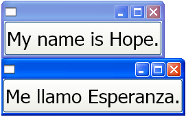

Обзор использования автоматической разметки
В этом разделе представлены рекомендации разработчикам о написании Windows Presentation Foundation (WPF) приложений с локализуемым пользовательские интерфейсы (UI). В прошлом локализации интерфейса пользователя было много времени. Каждый язык, на который переводился пользовательского интерфейса требовал попиксельного выравнивания. Сегодня при правом разработки и кодирования стандартов, Пользовательские интерфейсы могут создаваться таким образом, чтобы локализаторам требовалось выполнять меньше изменений размеров и расположений для выполнения. Подход к написанию приложений, в которых проще изменять размер и положение элементов называется автоматической разметкой и может осуществляться с помощью WPF разработки приложения.
Преимущества использования автоматической разметки
Так как WPF систему представления является мощной и гибкой, она предоставляет возможность размещения элементов в приложении, которое может быть настроено в соответствии с требованиями различных языков. В следующем списке отмечены преимущества автоматической разметки.
Пользовательский Интерфейс отображается правильно на любом языке.
Снижается необходимость перенастраивать расположение и размер элементов управления после перевода текста.
Снижается необходимость перенастраивать размер окна.
Макет пользовательского интерфейса отображается правильно на любом языке.
Локализация может быть сведена не многим более чем к переводу строки.
Автоматическая разметка и элементы управления
Автоматическая разметка позволяет приложению устанавливать размер элемента управления автоматически. Например, элемент управления может измениться, чтобы вместить строку целиком. Эта возможность позволяет локализаторам перевести строку; больше не требуется изменять размер элемента управления, чтобы полностью отобразить переведенный текст. В следующем примере создается кнопка с текстом на английском языке.
<Window
xmlns="http://schemas.microsoft.com/winfx/2006/xaml/presentation"
xmlns:x="http://schemas.microsoft.com/winfx/2006/xaml"
x:Class="ButtonLoc.Pane1"
Name="myWindow"
SizeToContent="WidthAndHeight"
>
<DockPanel>
<Button FontSize="28" Height="50">My name is Hope.</Button>
</DockPanel>
</Window>
В этом примере все, что нужно сделать, чтобы подпись кнопки была на испанском языке, — это изменить текст. Например, примененная к объекту директива
<Window
xmlns="http://schemas.microsoft.com/winfx/2006/xaml/presentation"
xmlns:x="http://schemas.microsoft.com/winfx/2006/xaml"
x:Class="ButtonLoc.Pane1"
Name="myWindow"
SizeToContent="WidthAndHeight"
>
<DockPanel>
<Button FontSize="28" Height="50">Me llamo Esperanza.</Button>
</DockPanel>
</Window>
На следующем рисунке показан результат выполнения примеров кода:

Автоматическая разметка и стандарты кодирования
Использование автоматической разметки требуется набор кодирования и стандартов и правил разработки для создания полностью локализуемый пользовательский Интерфейс. Следующие рекомендации предназначены для помощи в кодировании автоматической разметки.
Не используйте абсолютных положений
Не используйте Canvas так, как он применяет абсолютное позиционирование элементов.
Используйте DockPanel, StackPanel, и Grid для размещения элементов управления.
Обсуждение различных типов панелей, см. в разделе Общие сведения о панелях.
Не устанавливайте фиксированный размер окна
Используйте ключевое слово Window.SizeToContent. Пример:
<StackPanel xmlns="http://schemas.microsoft.com/winfx/2006/xaml/presentation" xmlns:x="http://schemas.microsoft.com/winfx/2006/xaml" x:Class="GridLoc.Pane1" >
Добавить FlowDirection
Добавить FlowDirection к корневому элементу приложения.
WPF предоставляет удобный способ поддержки горизонтальной, двунаправленной и вертикальной разметки. В инфраструктуре представления FlowDirection свойство может использоваться для определения макета. Ниже перечислены шаблоны направления текста.
FlowDirection.LeftToRight (LrTb) — горизонтальная разметка для латиницы, восточноазиатских языков и т. д.
FlowDirection.RightToLeft (RlTb) — двунаправленная разметка для арабского, иврита и т. д.
Используйте составные шрифты вместо физических шрифтов
С составными шрифтами FontFamily свойство необходимо локализовать.
Разработчики могут использовать один из следующих шрифтов или создать свой собственный.
- Глобальный пользовательский интерфейс
- Global San Serif
- Global Serif
Добавление XML: lang
Добавить
xml:langатрибут в корневом элементе пользовательского интерфейса, напримерxml:lang="en-US"для приложения на английском языке.Поскольку составные шрифты используют
xml:langдля определения того, какой шрифт использовать, установите это свойство для поддержки многоязычных сценариев.
Автоматическая разметка и сетки
Grid Элемент, полезен для автоматической разметки, так как он позволяет разработчику позиционировать элементы. Объект Grid способен распределять имеющееся пространство среди своих дочерних элементов при помощи упорядочения столбцов и строк элемента управления. Элементы пользовательского интерфейса могут занимать несколько ячеек, и возможно размещение сетки внутри сетки. Сетки полезны, поскольку они позволяют создавать и позиционировать сложные пользовательского интерфейса. В следующем примере демонстрируется использование сетки для размещения нескольких кнопок и текста. Обратите внимание на то, что высоты и ширины ячейки установлено значение Auto; таким образом, ячейка, содержащая кнопку с изображением, изменяется в соответствии изображение.
<Grid Name="grid" ShowGridLines ="false">
<Grid.ColumnDefinitions>
<ColumnDefinition Width="Auto"/>
<ColumnDefinition Width="*"/>
</Grid.ColumnDefinitions>
<Grid.RowDefinitions>
<RowDefinition Height="Auto"/>
<RowDefinition Height="Auto"/>
<RowDefinition Height="Auto"/>
<RowDefinition Height="Auto"/>
<RowDefinition Height="Auto"/>
</Grid.RowDefinitions>
<TextBlock Margin="10, 10, 5, 5" Grid.Column="0" Grid.Row="0" FontSize="24">Grid
</TextBlock>
<TextBlock Margin="10, 10, 5, 5" Grid.Column="0" Grid.Row="1" FontSize="12"
Grid.ColumnSpan="2">The following buttons and text are positioned using a Grid.
</TextBlock>
<Button Margin="10, 10, 5, 5" Grid.Column="0" Grid.Row="2" Background="Pink"
BorderBrush="Black" BorderThickness="10">Button 1
</Button>
<TextBlock Margin="10, 10, 5, 5" Grid.Column="1" Grid.Row="2" FontSize="12"
VerticalAlignment="Center" TextWrapping="WrapWithOverflow">Sets the background
color.
</TextBlock>
<Button Margin="10, 10, 5, 5" Grid.Column="0" Grid.Row="3" Foreground="Red">
Button 2
</Button>
<TextBlock Margin="10, 10, 5, 5" Grid.Column="1" Grid.Row="3" FontSize="12"
VerticalAlignment="Center" TextWrapping="WrapWithOverflow">Sets the foreground
color.
</TextBlock>
<Button Margin="10, 10, 5, 5" Grid.Column="0" Grid.Row="4">
<Image Source="data\flower.jpg"></Image>
</Button>
<TextBlock Margin="10, 10, 5, 5" Grid.Column="1" Grid.Row="4" FontSize="12"
VerticalAlignment="Center" TextWrapping="WrapWithOverflow">Adds an image as
the button's content.
</TextBlock>
</Grid>
На приведенном ниже рисунке показана сетка, созданная с помощью предыдущего кода.

Grid
Автоматическая разметка и сетки, использующие свойство IsSharedSizeScope
Объект Grid полезен в локализуемых приложениях для создания элементов управления, чтобы вместить содержимое. Однако иногда требуется, чтобы элемент управления сохранял определенный размер, независимо от содержимого. Например, если имеются кнопки ОК, "Отмена" и "Обзор", то, возможно, не требуется выравнивать размер этих кнопок по размеру содержимого. В этом случае Grid.IsSharedSizeScope присоединенное свойство полезно для общего использования одного размера несколькими элементами сетки. В следующем примере демонстрируется совместное использование столбцов и строк, изменение размера данных между несколькими Grid элементов.
<StackPanel Orientation="Horizontal" DockPanel.Dock="Top">
<Button Click="setTrue" Margin="0,0,10,10">Set IsSharedSizeScope="True"</Button>
<Button Click="setFalse" Margin="0,0,10,10">Set IsSharedSizeScope="False"</Button>
</StackPanel>
<StackPanel Orientation="Horizontal" DockPanel.Dock="Top">
<Grid ShowGridLines="True" Margin="0,0,10,0">
<Grid.ColumnDefinitions>
<ColumnDefinition SharedSizeGroup="FirstColumn"/>
<ColumnDefinition SharedSizeGroup="SecondColumn"/>
</Grid.ColumnDefinitions>
<Grid.RowDefinitions>
<RowDefinition Height="Auto" SharedSizeGroup="FirstRow"/>
</Grid.RowDefinitions>
<Rectangle Fill="Silver" Grid.Column="0" Grid.Row="0" Width="200" Height="100"/>
<Rectangle Fill="Blue" Grid.Column="1" Grid.Row="0" Width="150" Height="100"/>
<TextBlock Grid.Column="0" Grid.Row="0" FontWeight="Bold">First Column</TextBlock>
<TextBlock Grid.Column="1" Grid.Row="0" FontWeight="Bold">Second Column</TextBlock>
</Grid>
<Grid ShowGridLines="True">
<Grid.ColumnDefinitions>
<ColumnDefinition SharedSizeGroup="FirstColumn"/>
<ColumnDefinition SharedSizeGroup="SecondColumn"/>
</Grid.ColumnDefinitions>
<Grid.RowDefinitions>
<RowDefinition Height="Auto" SharedSizeGroup="FirstRow"/>
</Grid.RowDefinitions>
<Rectangle Fill="Silver" Grid.Column="0" Grid.Row="0"/>
<Rectangle Fill="Blue" Grid.Column="1" Grid.Row="0"/>
<TextBlock Grid.Column="0" Grid.Row="0" FontWeight="Bold">First Column</TextBlock>
<TextBlock Grid.Column="1" Grid.Row="0" FontWeight="Bold">Second Column</TextBlock>
</Grid>
</StackPanel>
<TextBlock Margin="10" DockPanel.Dock="Top" Name="txt1"/>
Примечание полный пример кода, см. в разделе общей папки свойств размера между сетками